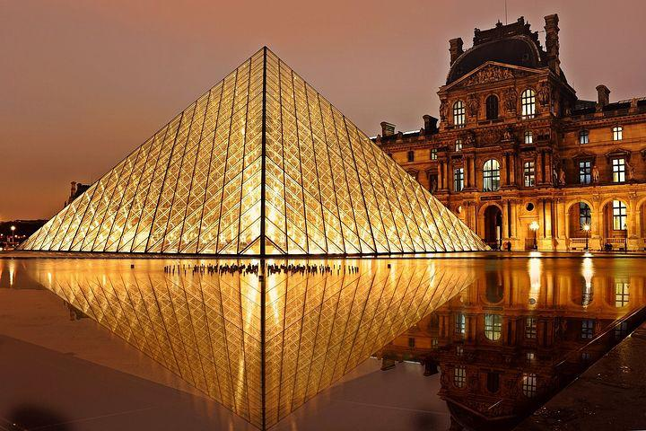
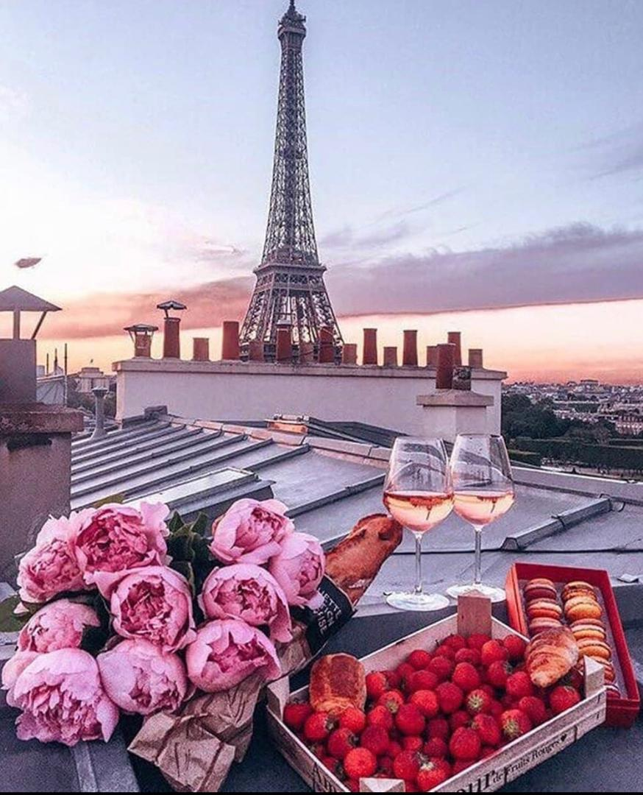

PARIS
PARIS,la ville de la lumiere
La capitale française posséde le surnom de ville LUMIERE depuis le XVIIe siecle. ET si le lien avec les philosophes des lumiéres parait evident,il n'en est .CE sont en effet les visiteurs,impressionner par l'éclairage public mis en place par le premier lieutnant général de paris NICOLAS de la REYNIE nommée par LOUIS XIV-qui ont ainsi surnomée PARIS
L'ARC DE TRIOMPHE
Situé place de l'etoile en pleine capitale L'arc de triomphe decroche dans ce classement le titre de destinations touristiques française la plus populaires. Il faut dire aussi qu'il est situé directement daans l'axe d'un autre site touristiques majeures, l'AVENUE DES CHAMPS-ELYSEES.LE MUSEE DE LOUVRE
LE MUSEE DE LOUVRE est unn musée située dans le premier arrondissement de paris,en FRANCE Une préfiguration en est imaginée en 1775-1776 par le comte d'angivillier,directeur général des batiments du roi,comme lieu de presentation des chefs-d'oeuvre de la collection de la coronne

